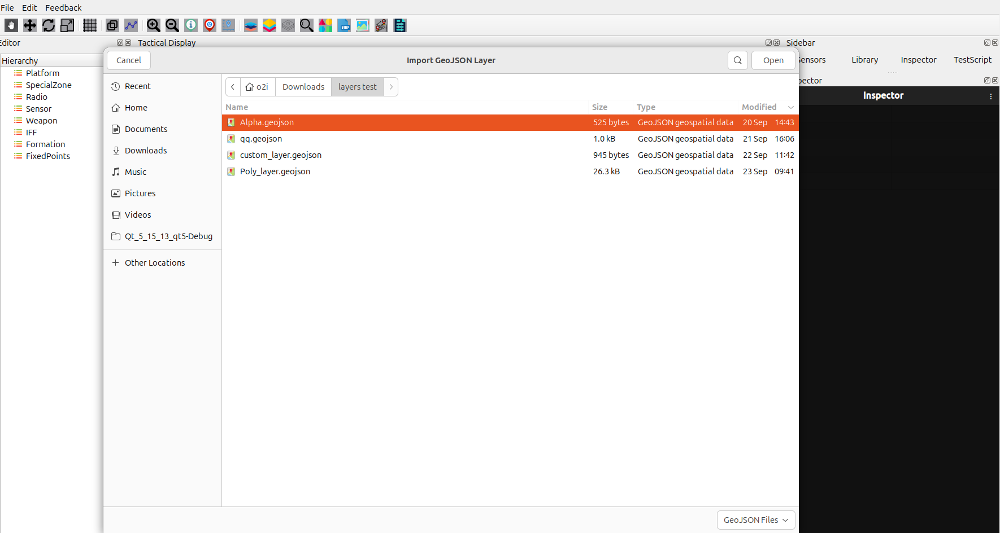
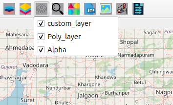

Import GeoJSON Features User Guide
Import GeoJSON Icon Overview
The Import GeoJSON button allows you to add custom geographic data layers to your map from GeoJSON files, enabling you to visualize points, lines, polygons, and other vector data.
Supported File Formats
GeoJSON (
.geojson,.json)JSON files with GeoJSON structure
GeoJSONL (Line-delimited GeoJSON)
TopoJSON (
.topojson)
How to Import GeoJSON Files
Step-by-Step Import Process
Click the Import GeoJSON icon on the Design Toolbar
A file dialog opens — navigate to your GeoJSON file
Select the file and click Open
The layer automatically loads and appears on your map
The layer name is derived from the filename
{kind=link}

Automatic Layer Management
Layer is automatically visible after import
Added to GeoJSON Layers menu for management
Appears in the layer visibility controls
Supports multiple GeoJSON layers simultaneously
Managing GeoJSON Layers
Layer Visibility Control
Click the GeoJSON Layers button (layers icon)
A dropdown menu shows all imported GeoJSON layers
Check the box to show a layer
Uncheck the box to hide a layer
Multiple GeoJSON layers can be visible at once
{kind=link}
